Project update (Fleetmon data munging)
Updating the project page so far
The AIS data is huge. So we now have chunked it into yearly raw data (with 2 hourly updates).
Daily data: We have utilized prio gridcells by counting all unique ships in a gridcell, for each day. For instance, grid-cell 138607 had 146 unique vessels on 2014/6/21, whereas grid-cell 129966 had only one unique ship movement on that day.
Monthly: We then count all daily unique ship movements in a month for each grid-cells, from January 2014 January to August 2022. Note that these are cumulative counts and note average, and there is a substantive variations among gridcells in the Gulf of Guinea (and therefore log transformed value is a better depiction in a figure). For instance, grid-cell 138607 had 4190 unique vessels on 2014/6, whereas grid-cell 129966 had only 31 unique ship movement on that month.
The following figures compare the raw two-hour updates of ship movements in the August 2014, with the aggregate monthly grid-cell data.
Month: August 2014
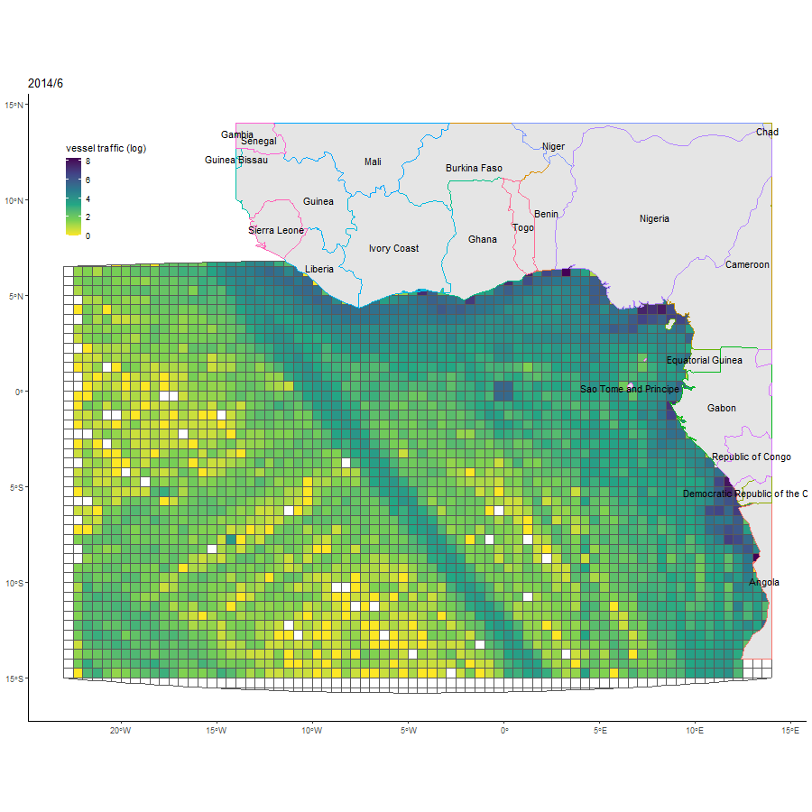
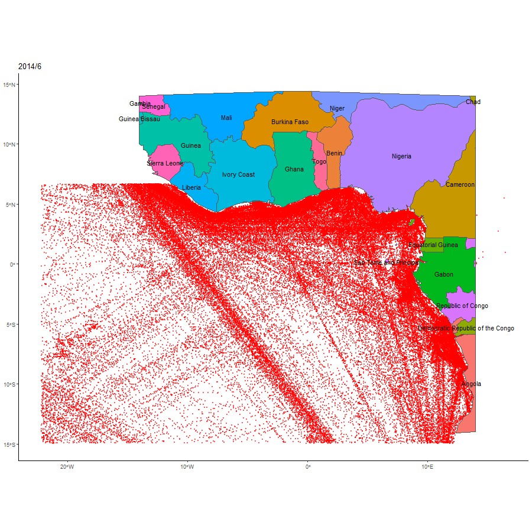
Does piracy affect trade/ship movement? Analyzing grid-cell 135014
Does the above data correlate with piracy events? Following figures depict piracy events that took place within the indicated month. One grid-cell where the number of piracy incidents vary is grid-cell 135014. Figure captions show the ship cumulative count and the average daily ship count for displayed month, for that grid-cell only (grid-cell 135014). After the last figure, the table displays the ship movement data for that grid-cell. IT is likely that the variation in ship movement is seasonal.
Piracy events are “Actual” events, and does not include “Attempted” (including attempted is slightly more noisy)
We do see some fluctuations in ship movements with piracy events, although it is not very clear. For instance, we see piracy in the month that has higher ship movement, which is what we argued in the Indonesian paper. But because we have monthly ship movement data, we are not able to ascertain whether ship movements are reduced in the short run, immediately after piracy.
It might be bit clearer if we scale this to weekly level.
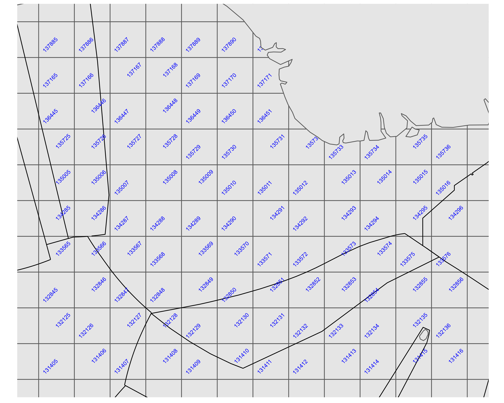
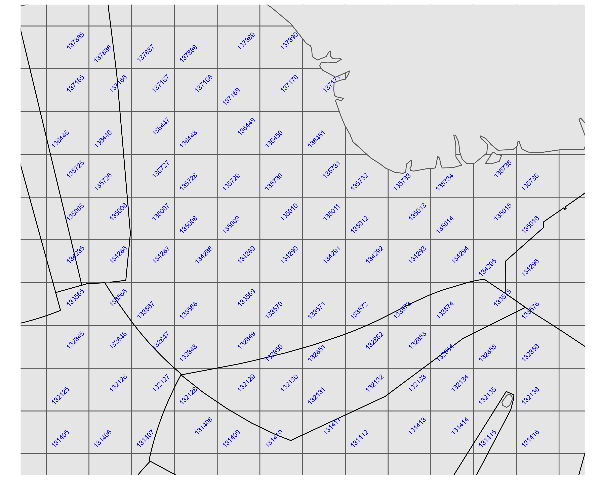
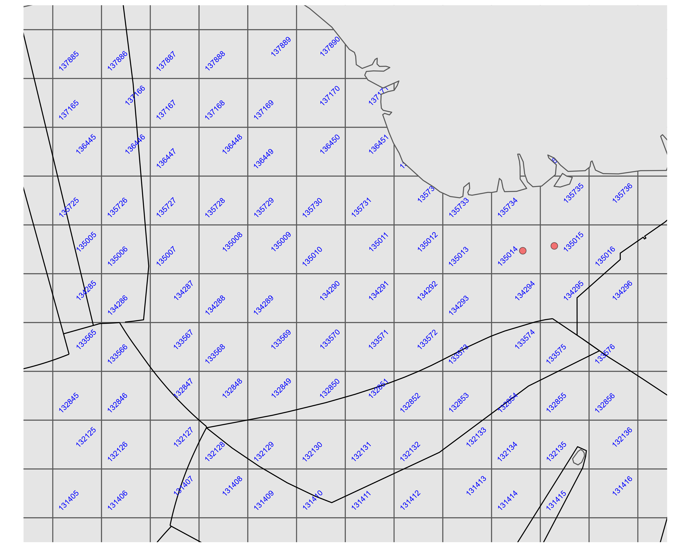
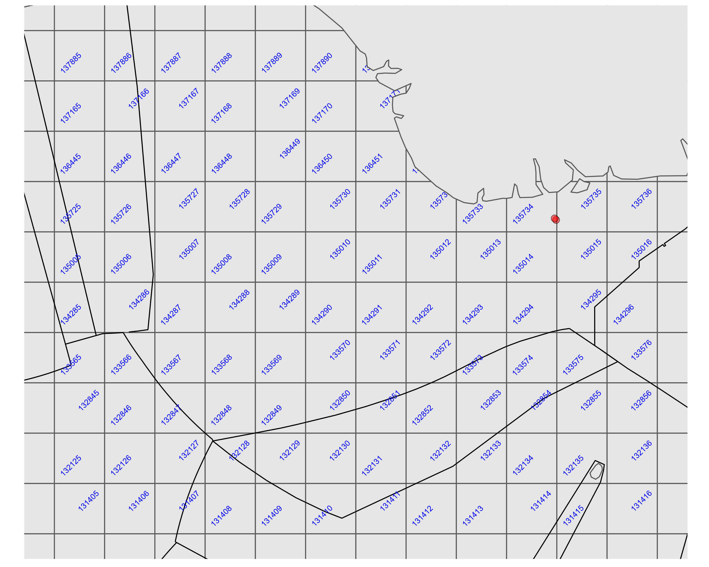
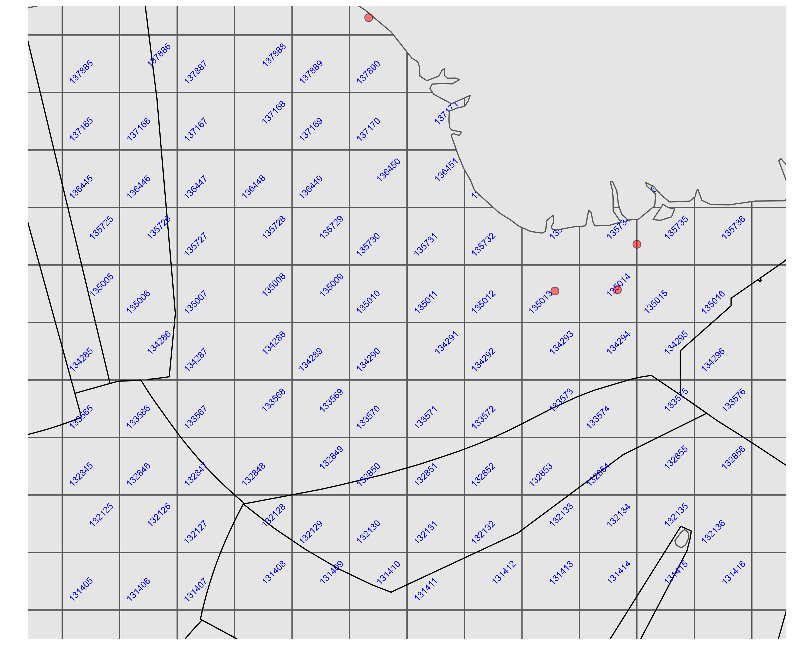
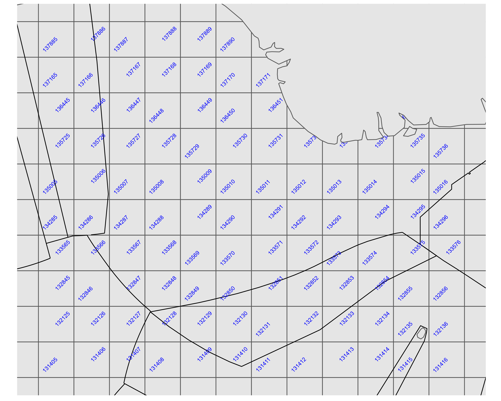
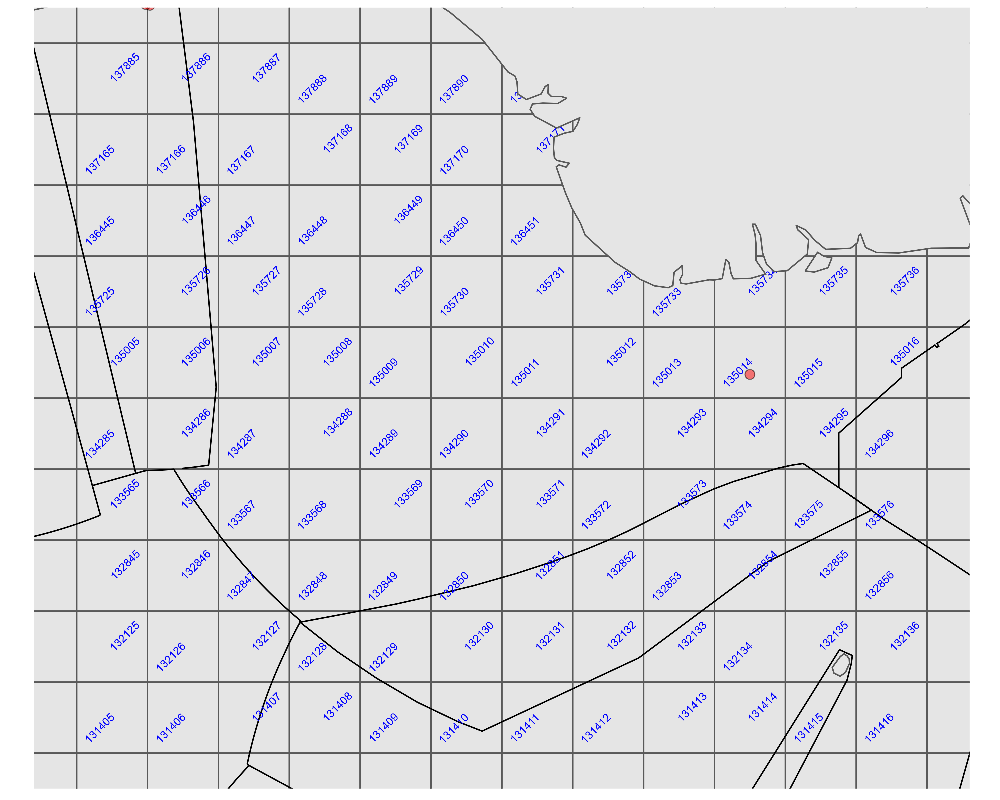
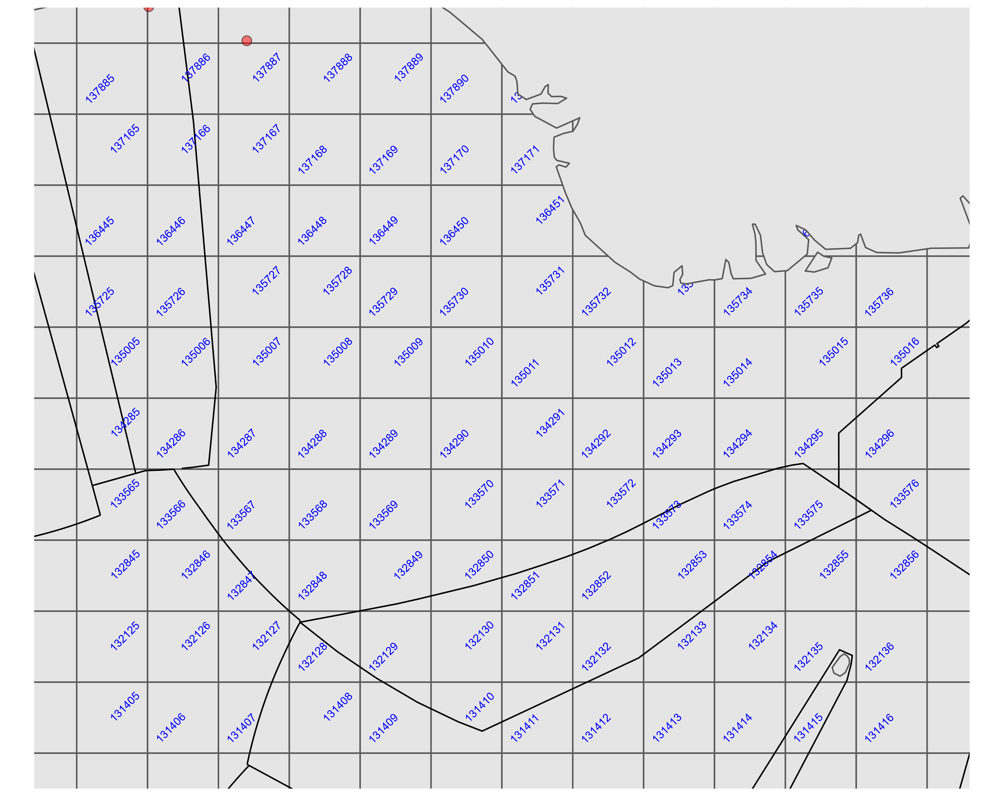
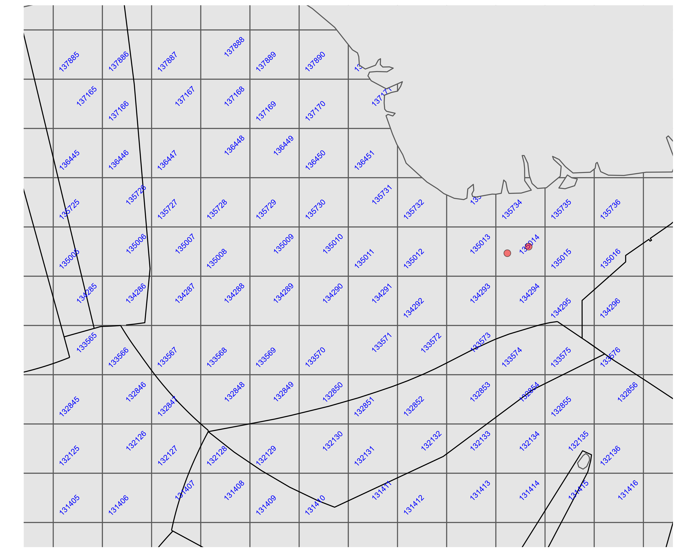
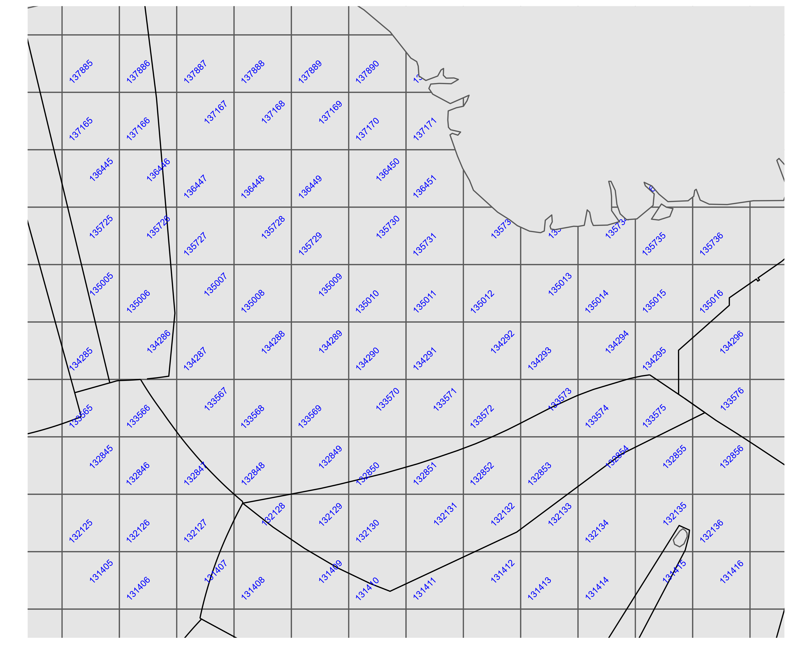
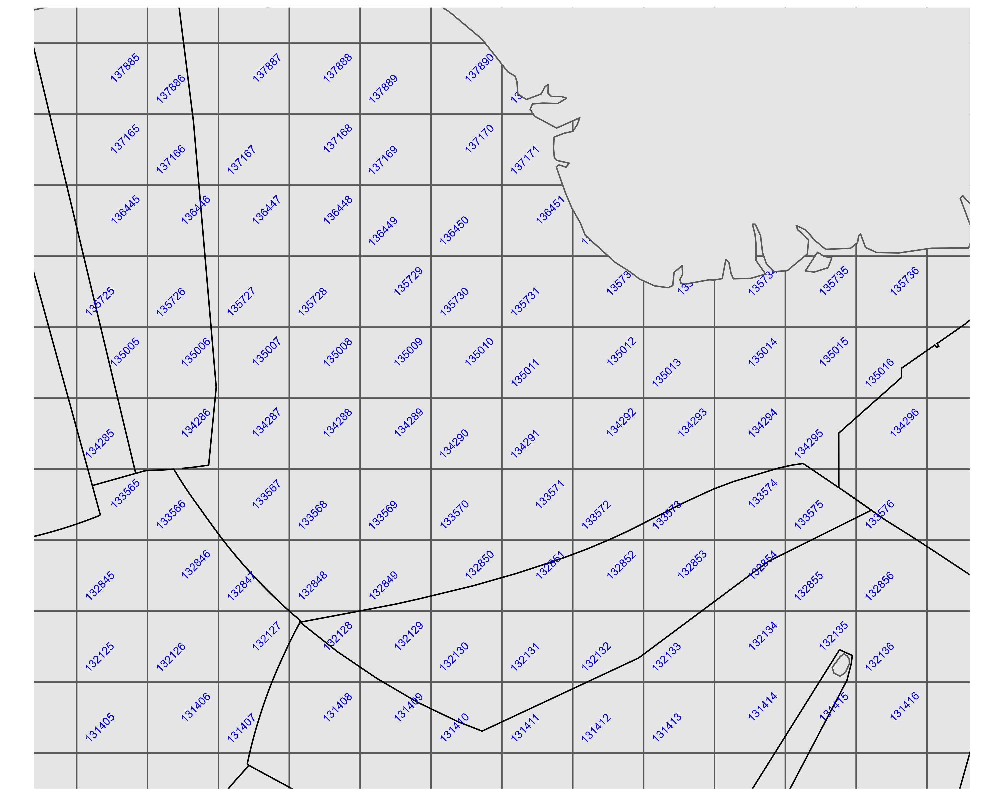
Looking at the ship movement data for grid-cell 135014, which is in the Nigerian EEZ:
gid year month cum_n_vessels mean_vessels
135014 2017 1 356 11.5
135014 2017 2 308 11.0
135014 2017 3 326 10.5
135014 2017 4 437 14.6
135014 2017 5 390 12.6
135014 2017 6 395 13.2
135014 2017 7 368 11.9
135014 2017 8 401 12.9
135014 2017 9 341 11.4
135014 2017 10 370 11.9
135014 2017 11 350 11.7
135014 2017 12 414 13.4
135014 2018 1 380 12.3
135014 2018 2 322 11.5
135014 2018 3 440 14.2
135014 2018 4 393 13.1
135014 2018 5 388 12.5
135014 2018 6 334 11.1
135014 2018 7 326 10.5
135014 2018 8 382 12.3
135014 2018 9 337 11.2
135014 2018 10 385 12.4
135014 2018 11 377 12.6
135014 2018 12 463 14.9